Stegonotus
The genus Stegonotus (family Colubridae) has 25 species in SnakeList (none venomous), recorded in 6 countries.
- 25species
- 25non-venomous
- 6countries
About the genus
A genus of the family Colubridae (colubrids).
Species
Showing 25 species
- No photo yetAdmiralty Islands GroundsnakeStegonotus admiraltiensis
- No photo yetAru Island GroundsnakeStegonotus aruensis
- No photo yetAyamaru GroundsnakeStegonotus ayamaru
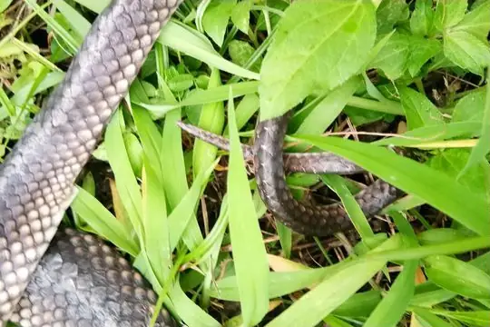
Batjan Frog-eating SnakeStegonotus batjanensis- No photo yetBismark Ground SnakeStegonotus heterurus
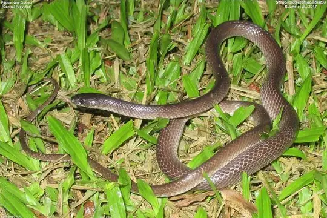
Black-lipped groundsnakeStegonotus melanolabiatus Bornean Black SnakeStegonotus borneensis
Bornean Black SnakeStegonotus borneensis Dark-headed Sabah GroundsnakeStegonotus caligocephalus
Dark-headed Sabah GroundsnakeStegonotus caligocephalus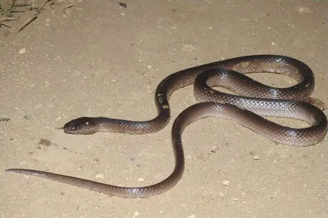
De Rooij's groundsnakeStegonotus derooijae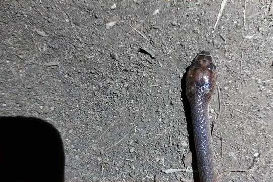
Diehl’s Little Ground SnakeStegonotus diehli- No photo yetFlores Ground SnakeStegonotus florensis
- No photo yetKei Island GroundsnakeStegonotus keyensis
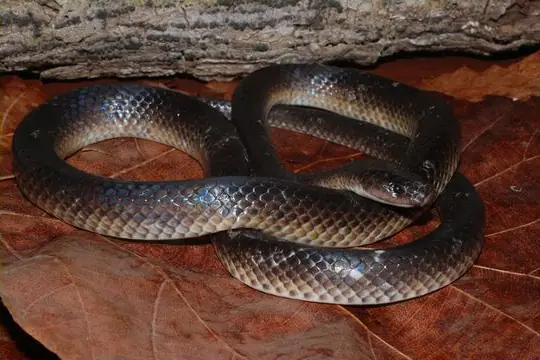
Milne Bay Ground SnakeStegonotus guentheri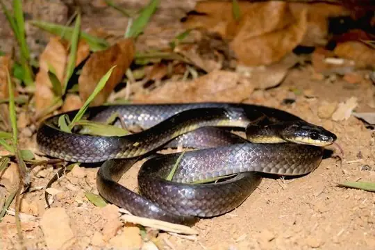
Müller's Ground SnakeStegonotus muelleri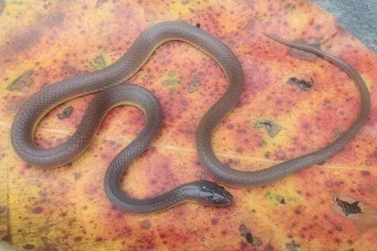
Northern New Guinea Ground SnakeStegonotus modestus- No photo yetPurari GroundsnakeStegonotus aplini
- No photo yetPöch's groundsnakeStegonotus poechi
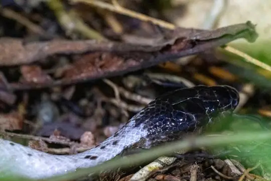
Rainbow Ground SnakeStegonotus iridis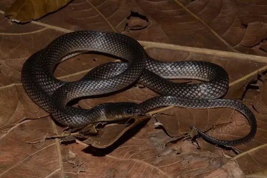
Reticulate groundsnakeStegonotus reticulatus- No photo yetSemau Island groundsnakeStegonotus lividus
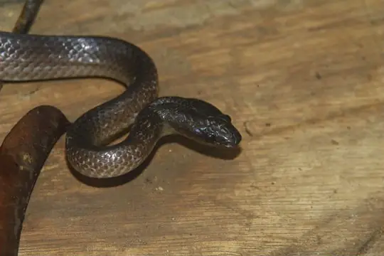
Slatey-grey Snake (cucullatus)Stegonotus cucullatus- No photo yetSlatey-grey Snake (parvus)Stegonotus parvus
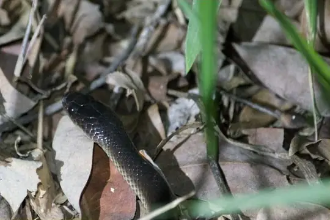
Slaty-grey snakeStegonotus australis- No photo yetSumba Ground SnakeStegonotus sutteri
- No photo yetTimor Ground SnakeStegonotus nancuro
No snakes in Stegonotus match.
About the genus Stegonotus
- Family: Colubridae.
- Recorded in: Australia, Indonesia, Malaysia, Papua New Guinea, Philippines, Timor-Leste.